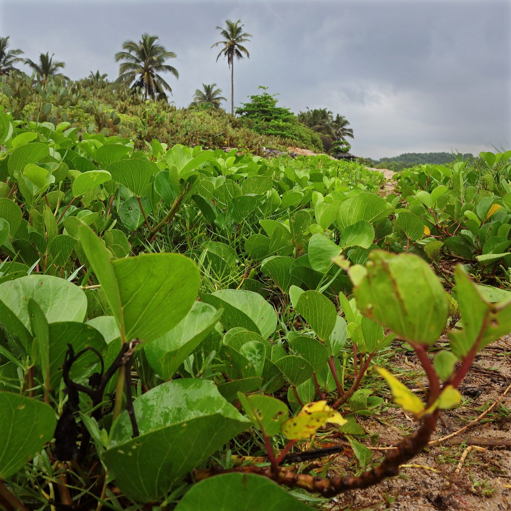
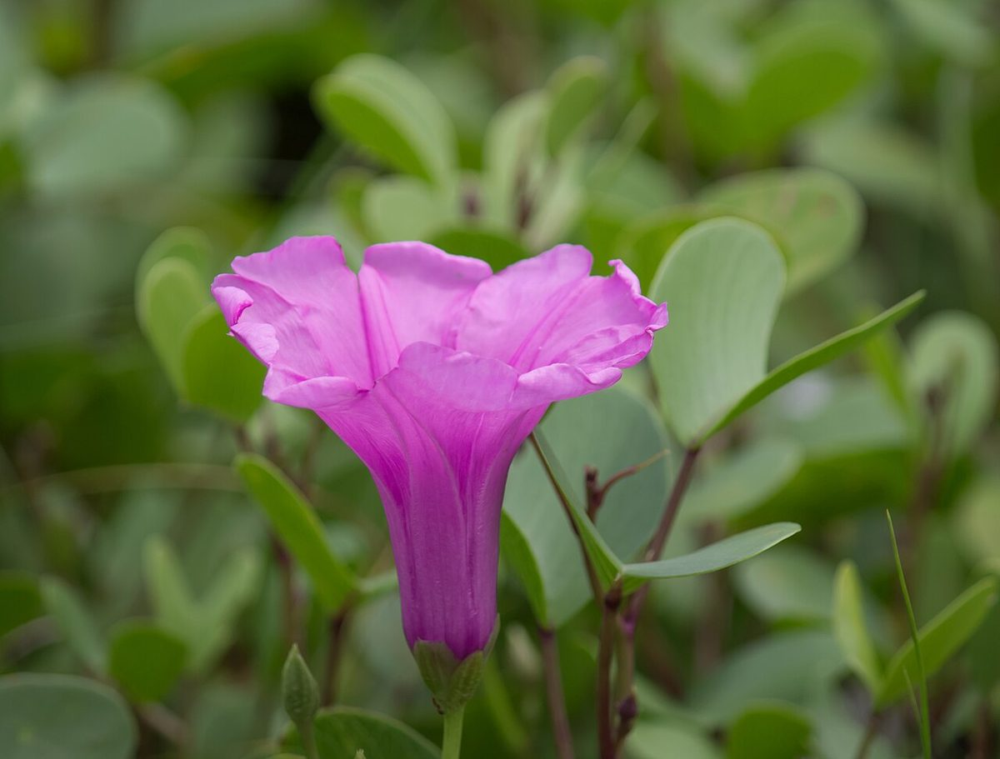

COMMON Beach strand Dune
Ipomoea pes-caprae
pōhuehue · beach morning-glory, goat's foot


Quick facts
| Family | Convolvulaceae |
|---|---|
| Scientific name | Ipomoea pes-caprae |
| Hawaiian name(s) | pōhuehue |
| English name(s) | beach morning-glory, goat's foot |
| Status | Indigenous (native, non-endemic) |
| Conservation | — |
| Coastal zones | Beach strand Dune |
| Occurrence | Sprawling vine on the upper beach and low fore-dunes throughout the unpopulated Kauai coast — very conspicuous on Kalalau, Miloliʻi and Māhāʻulepū. |
Hazards: Seeds contain small amounts of ergoline alkaloids and should not be ingested.
How to identify
- Growth form
- Long, prostrate, herbaceous vine that trails 5–30 m across bare sand from a woody rootstock, rooting at nodes and rarely twining.
- Size
- Runners routinely 5–15 m long; leaves at ground level.
- Leaves
- Thick, glossy, notched at the tip into two lobes so the outline resembles a cloven hoof or goat's foot (hence "pes-caprae"). 3–10 cm across, held on long petioles.
- Flowers
- Bright pink to magenta funnel-shaped flowers, 4–5 cm wide, opening in the morning and closing by early afternoon. Typically borne singly on long stalks above the runners.
- Fruit / seed
- Dry brown papery capsule, ~1.5 cm, containing 4 hairy black seeds that float on ocean currents.
- Bark / stem
- Green fleshy stems, becoming pale and woody at the base; exude a thin milky sap when cut.
- Where it sits on the coast
- Bare sand and low dune above the tideline, often the very first plant outward from bare storm beach.
Clinchers (features that lock the ID)
- Two-lobed "goat's foot" leaf notched at the tip — unmistakable.
- Bright magenta funnel flower opening in the morning.
- Long prostrate runners in bare sand, not climbing.
Look-alikes
- Vigna marina (nanea, beach pea) — Also a sandy-beach creeper, but has three-leaflet compound leaves (not a single two-lobed leaf) and small yellow pea flowers instead of large pink morning-glory funnels.
- Ipomoea indica (blue morning-glory) or other Ipomoea species — Twines up other plants; leaves entire or three-lobed, not the distinctive cloven-hoof shape.
- Ipomoea imperati (hunakai) — Also a prostrate strand vine, but its flowers are WHITE with a pale yellow throat rather than pōhuehue's magenta funnel, and its leaves vary from entire ovate to deeply 3–5-lobed on the same runner rather than showing pōhuehue's uniform cloven-hoof shape. Check flower colour first — the two species commonly grow interspersed on the same beach.
Ecology
Salt-tolerant, drought-tolerant pantropical strand vine that anchors loose sand and initiates dune formation, providing microhabitat for ground-nesting invertebrates. Its salt-water-dispersed seeds account for its near-global tropical shoreline distribution. [1], [2], [3], [12]
Cultural significance
Pōhuehue is referenced in surfing chants and coastal moʻolelo; the vines were traditionally used to call in surf. As with all coastal plants described here, cultural use belongs to living Hawaiian practitioners and is not detailed further in this guide.